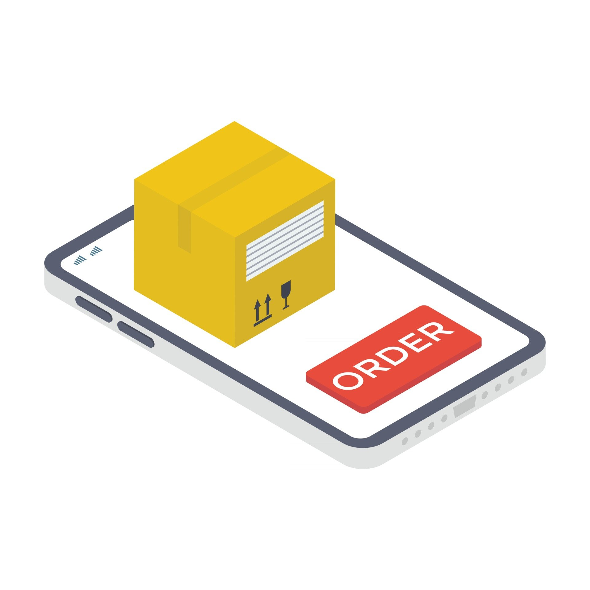

Quy trình mua hàng tại website PnU gồm có 5 bước
Bước 1: Chọn sản phẩm muốn mua sau đó nhấn vào mua ngay hoặc thêm vào giỏ hàng.
Bước 2: Sau khi chọn xong tất cả sản phẩm, khách hàng click vào giỏ hàng trên header để tiến hành quy trình mua hàng. Khách hàng kiểm tra số lượng, giá của hàng hóa đã chọn và xác nhận bằng cách click vào nút Mua hàng.
Bước 3: Khách hàng điền thông tin vào phiếu mua hàng bao gồm: tên, địa chỉ, phương thức thanh toán và phương thức vận chuyển. Sau khi điền đầy đủ thông tin, khách hàng click vào nút Xác nhận để chuyển qua màn hình xác nhận lại toàn bộ thông tin đã nhập và thông tin đơn hàng.
Bước 4: Sau khi xác nhận thông tin khách hàng người dùng sẽ nhấn vào nút Thanh toán để chuyển qua màn hình thanh toán.
Bước 5: Khách hàng thực hiện thanh toán theo phương thức thanh toán đã chọn.
Bước 6: Hệ thống kiểm tra kết quả thanh toán và xuất hóa đơn điện tử.
